RD 김기수가 직접 시공·작성한 자사 시공사례입니다.
안녕하세요. 한샘 신이천대리점 김기수RD입니다.
이천 우미린 어반퍼스트 아파트의 현관 수납, 중문, 안방 드레스룸 시공 사례를 올립니다.
이번 현장은 현관부터 안방 드레스룸까지 수납을 한 번에 정리한 시공입니다.
고객님께서 아파트에 기본으로 배치된 3연동 중문과 팬트리 자리 내부가 마음에 들지 않으셔서, 현관에는 팬트리 수납과 중문을 새로 구성했습니다. 안방에는 붙박이장·오픈형 드레스룸·화장대장을 넣었습니다.
이 글은 84타입(국민평수) 아파트에서 현관 수납과 드레스룸 구성을 고민하시는 분께 도움이 되도록, 어떤 자재를 어떻게 구성했는지 공간별로 정리했습니다.
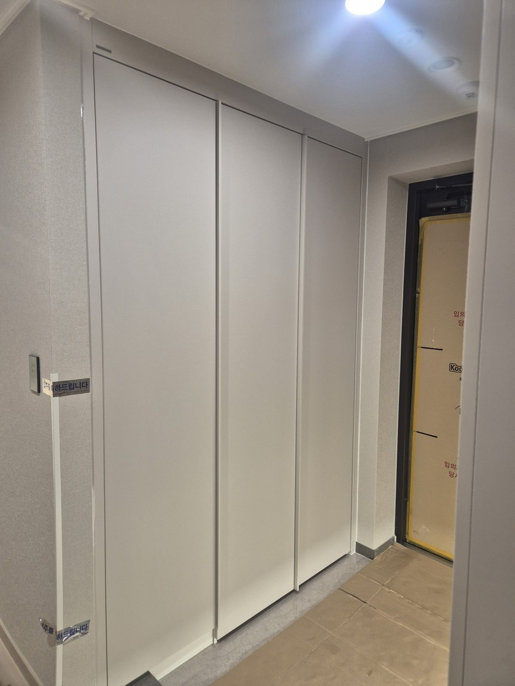
현관 팬트리 도어 – 유로300 매트 매그놀리아, 통로 도어와 수납장 도어를 같은 컬러로 맞춤
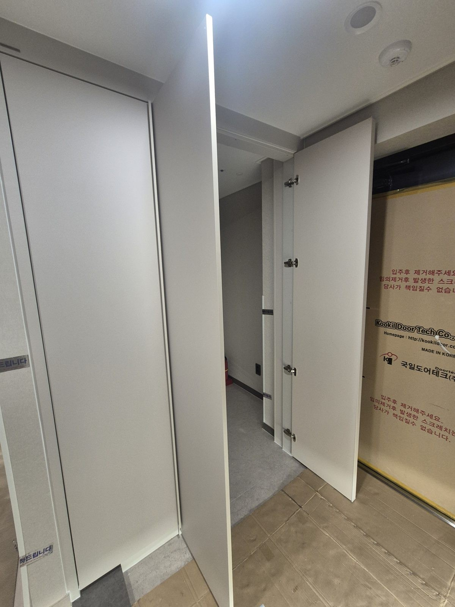
도어를 열면 안쪽 팬트리 공간으로 이어지는 구조
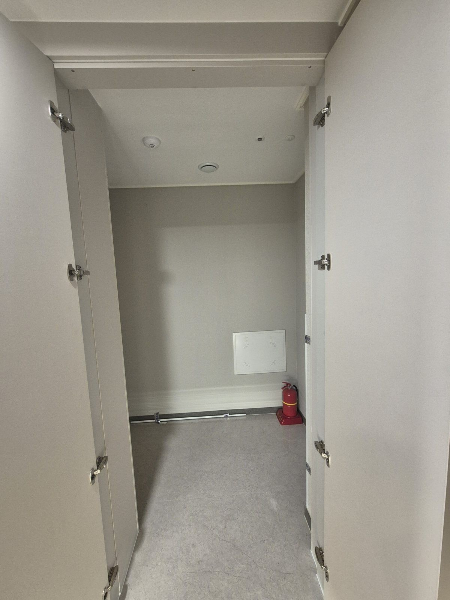
팬트리 내부 – 문을 활짝 열어 본 모습
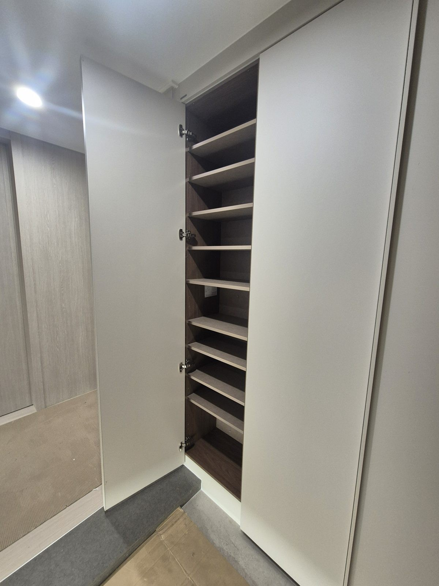
시그니처 현관선반장 – 선반 높이는 신발 크기에 맞게 조절 가능
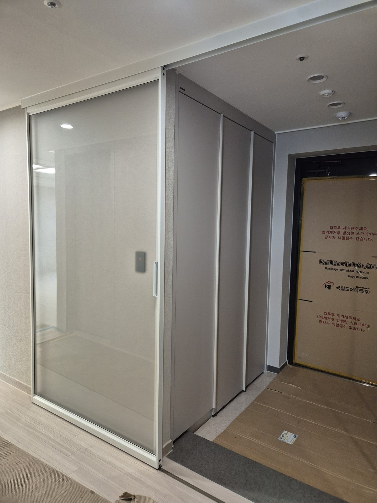
유닛 슬라이딩 중문 – 웜코튼 컬러, 백사틴유리
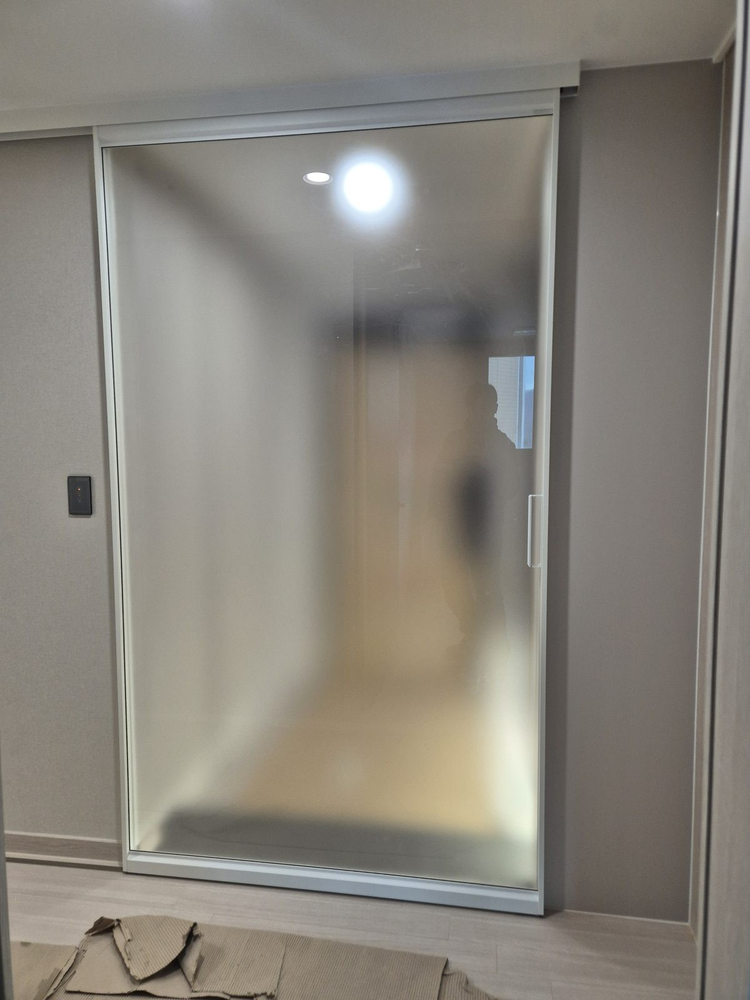
백사틴유리 – 빛은 통과시키고 시선은 은은하게 가림
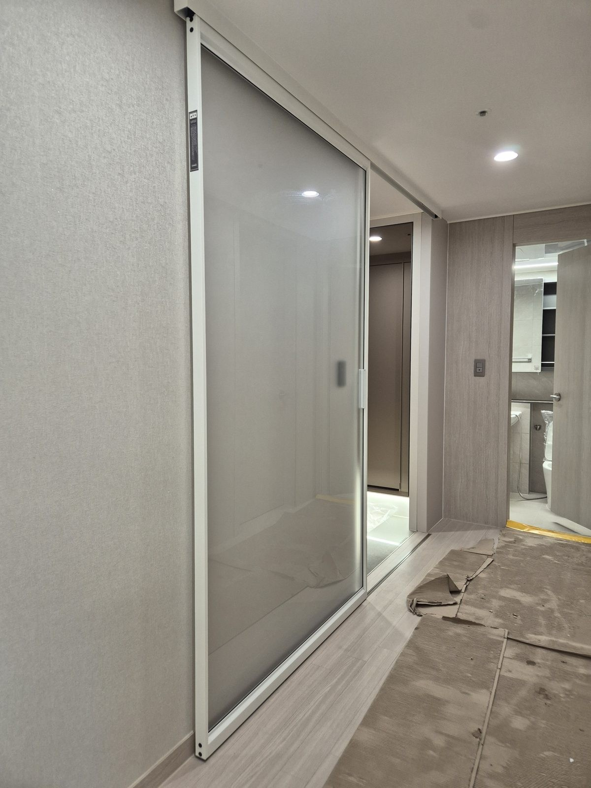
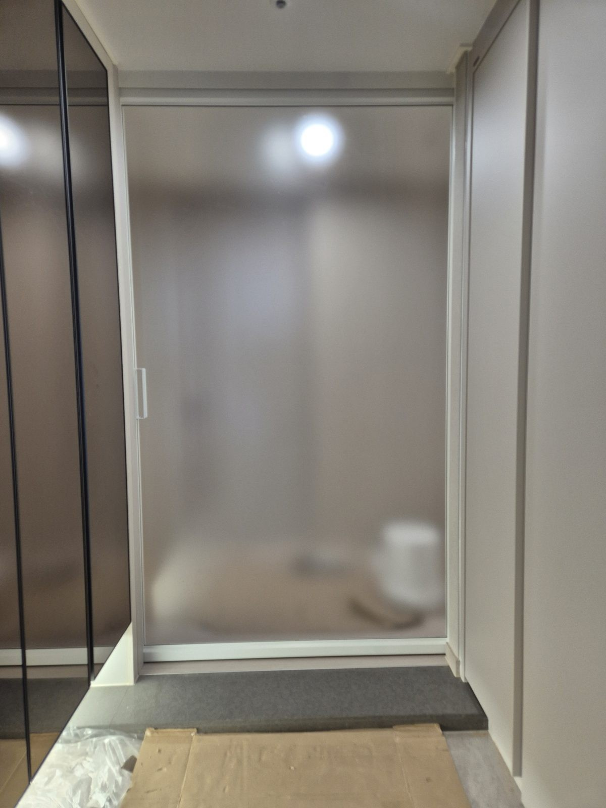
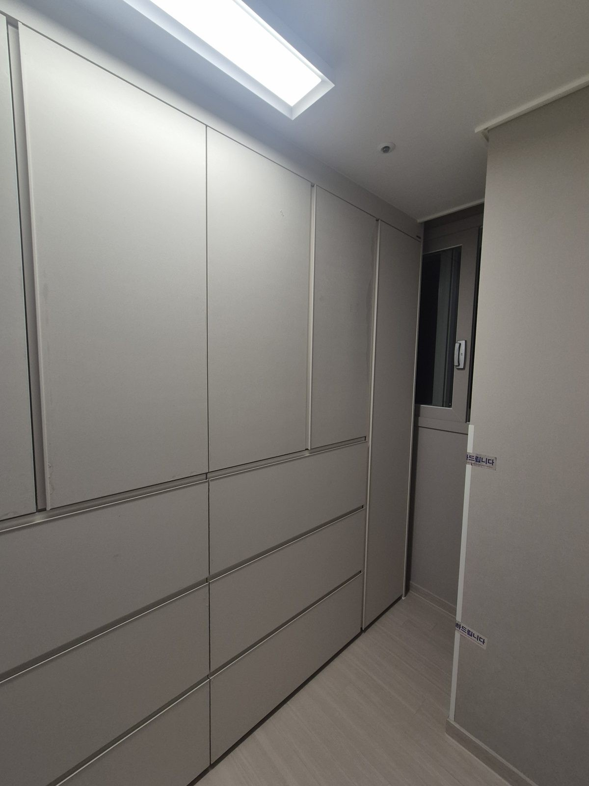
무드베이지 붙박이장 – 상부 도어와 하부 서랍 구성
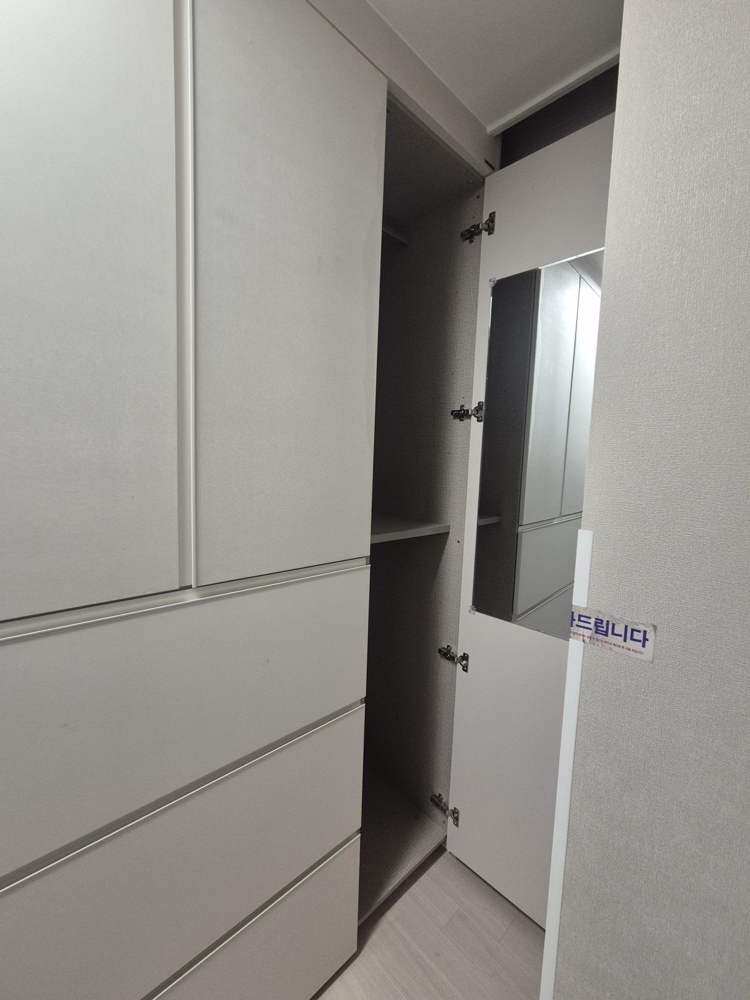
도어 안쪽 – 거울이 달린 수납 구성
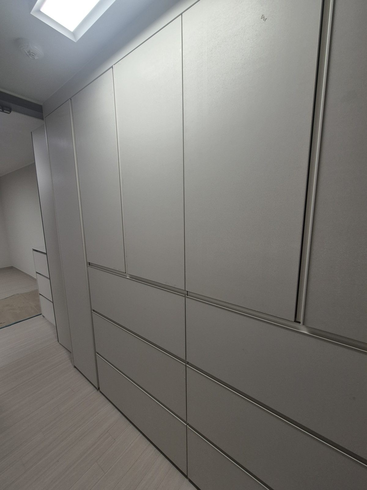
무드베이지 붙박이장 – 드레스룸 안쪽에서 본 모습
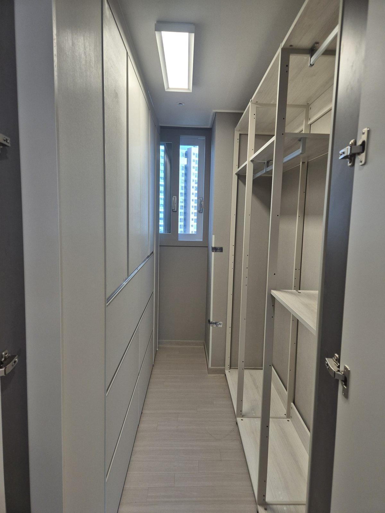
한샘 바흐 드레스룸 화이트 – 오픈형 프레임, 행거와 선반 구성
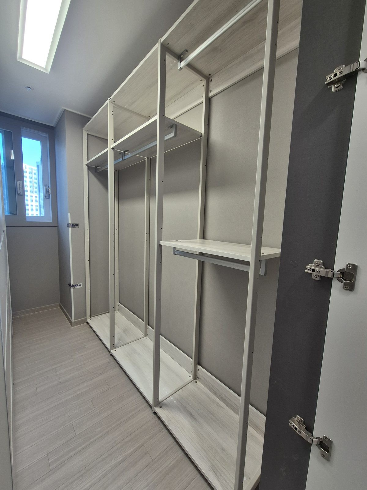
창이 있는 안쪽까지 행거와 선반이 이어지는 구성
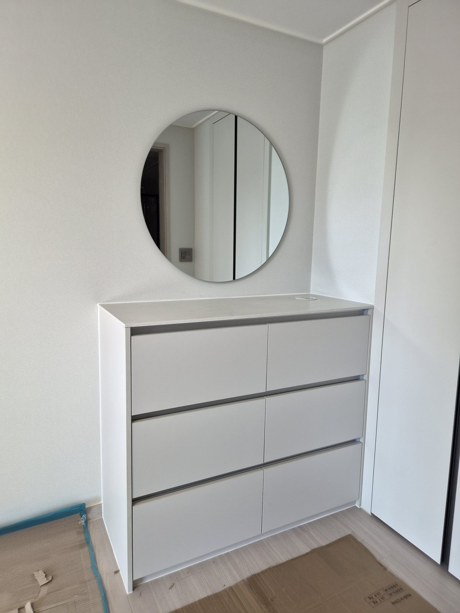
화장대장 – 스토리보드 듄그레이 3단서랍장 2세트, 아르떼크림 상판, 800*800 원형 거울
한샘 신이천대리점은 1997년부터 축적된 현장 경험을 기반으로 리모델링 전 공정을 안정적으로 진행하고 있습니다.
같은 한샘 리모델링이라도 설계 기준과 시공 관리 방식에 따라 결과는 크게 달라집니다.
수납은 자재보다 집 구조에 맞춘 구성이 사용 만족도를 좌우합니다. 우리 집 구조에 맞는 정확한 판단이 필요하다면
노하우 있는 RD가 직접 설계·감리하는 신이천대리점에서 상담 받아보시기 바랍니다.
실사용 중심의 설계, 안정적인 품질, 예측 가능한 공정 관리로, 고객 입장에서 불필요한 리스크가 없는, 실제 생활에서 오래 사용할 수 있는 리모델링을 목표로 하며 지역 기반 대리점으로서 책임 있는 운영을 이어가겠습니다.
■ 상담 문의
전화 031-635-5504
네이버에서 '한샘 신이천대리점'을 검색하시면 위치와 시공사례를 확인하실 수 있습니다.
경기도 이천시 이섭대천로 1271
시공 사진은 인스타그램 @hanssemkitchen_icheon 에서도 보실 수 있습니다.
#한샘신이천대리점 #한샘인테리어 #이천한샘 #한샘이천대리점 #우미린어반퍼스트 #드레스룸 #한샘드레스룸 #붙박이장 #현관수납 #한샘중문 #중문시공 #이천인테리어